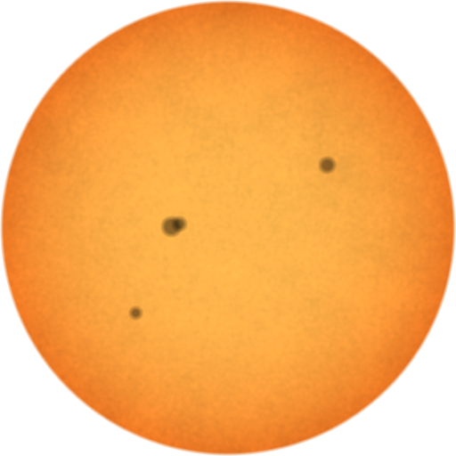
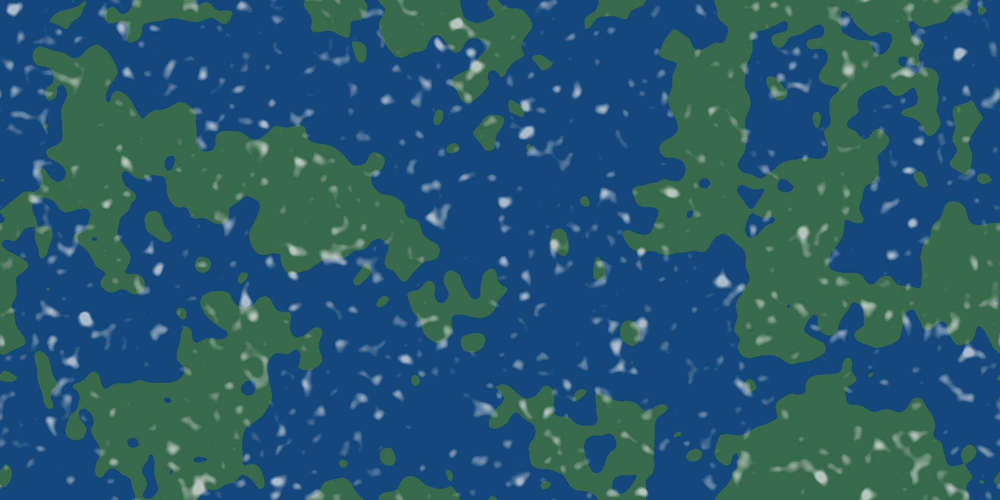

Can the Sun reach us?
Solar-powered missions need illumination windows and enough stored energy to survive the dark.
Where can a spacecraft land, receive sunlight, and stay in contact with Earth? Explore real date-dependent lunar sky geometry in a mission planner built for discovery.
Near the Moon's south pole, the Sun stays low to the horizon. Crater rims can block solar power, while the Moon itself—or nearby terrain—can interrupt the line to Earth. A promising landing site can become a difficult one a few hours later.
Solar-powered missions need illumination windows and enough stored energy to survive the dark.
A location needs line of sight or a valid relay path to exchange essential commands and telemetry.
One connected workflow. Change a location or time once and see its effects everywhere.
Pick a known landing area or click anywhere on the Moon. Define the landing uncertainty ellipse.
Scrub the one shared mission timeline. Track the Moon, the Sun, power, and Earth visibility together.
Inspect terrain, transfer, energy, communications, and surface operations before choosing a site.
Six connected lenses. One destination, one spacecraft, one shared clock.
Explore the lunar surface. Watch the Sun and Earth rise and set over candidate landing sites.
Set any lunar location and UTC time. See real date-dependent geometric Sun and Earth elevations in the lunar sky.
python3 setup_nasa_moon.py once with internet, then refresh. NASA source
 SUN ELEVATION—
SUN ELEVATION—
 EARTH ELEVATION—
EARTH ELEVATION—The ellipse uses 100 × 75 m semi-axes. Terrain suitability follows the current input conditions; NASA elevation measurements are used where a terrain tile is loaded. The global color image alone cannot resolve small rocks or soil strength.
Use the included preprocess_lola.py with a NASA PGDA 5m lunar south-pole GeoTIFF. This replaces the illustrative elevation layer with actual local DEM heights where covered; rock and soil safety remain unknown.
No verified terrain patch imported.
Explore launch windows, moving celestial geometry, delta-v and propellant budgets.
Gold = best within a simplified local alignment proxy. This is not a solved precision transfer or proven minimum propellant launch window.
Parking-orbit transfer only. No ascent, precise lunar capture, descent targeting, or finite-thrust validation included.
See how generation, sunlight, equipment loads and eclipse periods affect available energy.
Solar array + battery
Demo power specificationsEnergy storage is simulated from departure through 48 hours after landing. For dates beyond that modeled period, the live solar angle still updates, but battery charge is not extrapolated.
Test direct Earth visibility, line-of-sight clearance, relay concepts and radio link performance.
Direct visibility is approximate and assumes a flat lunar horizon. Obstacles are an illustrative overlay until high-resolution horizon profiles are available.
Link margins need antenna gains, transmit power, receiver noise and selected ground station. Unknown specifications are identified rather than fabricated.
Drive to a lunar cave, recover a mineral sample on foot, and deliver it to a research base scanner. Low-gravity terrain and obstacle physics make every maneuver count.
Watch the lander touch down, then drive to the cave shown on your GPS. Park and exit with E, collect the highlighted rock, return to your rover, and drive to the research outpost to scan your sample. Avoid rocks and dangerous drops.
You completed the traverse.
Insufficient power to continue.
A 360° horizon profile synchronized with the mission clock. Local mountain silhouettes are calculated from imported NASA LOLA elevation data.
Compare candidate sites and arrival dates based on the original NASA challenge: Sun and Earth visibility.
—
What this result tells usA relative comparison using simplified Sun/Earth geometry. A real landing decision also requires terrain horizon data, verified spacecraft limitations, and a full mission analysis.